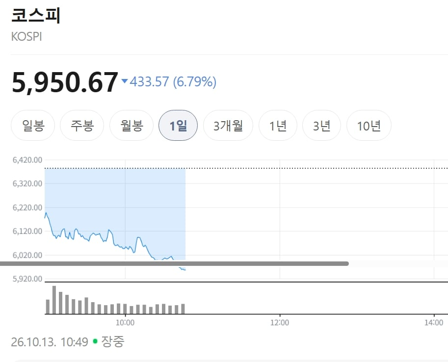
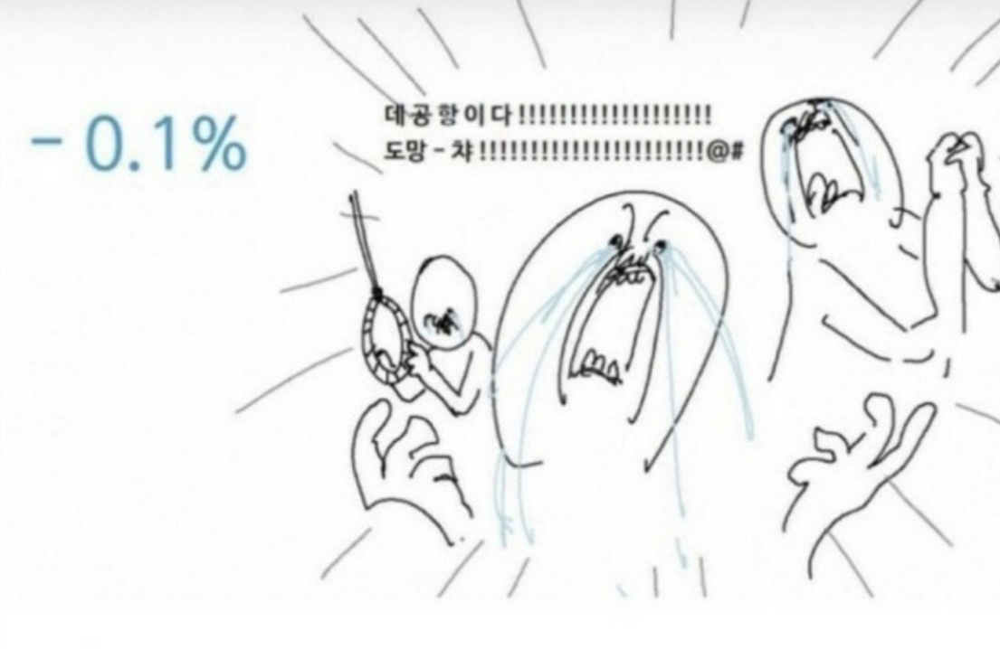

돈들어오면 더 사야지
어쩐지 요즘 비틱질하는글 안보이더라
초고점에 다 털었쥬? ㅋㅋㅋ
친구들이 사라할 때 샀으면 진짜 피똥쌌겠구나 시발 돈도 없었는데ㅋㅋㅋㅋㅋ
코스피는 뭔가 행복하지 않았지?
코스피는 18년간 박스권에 갇혀서 매년 2500돌파와 붕괴를 반복하던 때가 훨씬 행복했어
안타깝지만 코스피도 알고 있을거야
ㅋㅋㅋㅋ근데 왜떨어지는거냐 삼성 하닉은 솔직히 pcr이런거 다따져도 저평가인데 국장은 뭔가 갬성의 영역인듯 성과급파티도 영향있을것도같고
어제 미장 반도체주 떡락+중국 반도체
중국반도체는 실체는없고 항상 이야기만 도는데 걍월가 장난질같은데
어차피 실체보다 중요한건 옛날에 비해 기대감이 떨어졌다는거지 유독 한국만 빠지는것도 아니니까
돈이 없음 매수해줄 주체가 없는게 큰거 같음 국내 개미들은 이제 시체가 되서 위에서 기다리는 중이고 외국인은 1년내내 매도중이고 자사주 매입도 끝났고 여기에서 자사주를 추가 매입하던지 외국인이 돌아오지 않는 이상 실적이고 뭐고 횡보 또는 하락 반복 할 꺼 같음
zzzzzzzzzzzzzzzzz인생... 시.발 내주식..ㅠ
슬슬 담을때군
붕괴가 아니라 돌파겠지!ㅠㅠㅠㅠ
지금이다아앗! 매수우우!

시장에 피가 만연하고 공포가 어쩌고 저쩌고
어허 이건 모두 계획 된 선반영
모르겠음 호재는 씹고 선반영이라고 쳐 내리고 조금한 악재만 나와도 주석으로 떨어트리고
한번만 살려주시오...
7월의 악몽이 되살아난다.. 배당금은 뭔 씨발 그냥 팔걸 개좆같네 아
삼전 풀매수!
왜 환율이랑 같이 내려가냐고
아앗 코스피 5천 공약이...
수익금 2억서 900만원 됨ㅎㅎ
올랐으니 떨어지기도 하겠죠.
올랐다 내렸다 하는게 좋은 장임.
뭐 국장은 그 진폭이 좀 큰 편이긴 한데 삼전닉스 영업이익이나 AI반도체 흐름으로 봤을 때 다시 올라가지 않을까 싶음.
주식 시장에서 탐욕과 공포란, 미국 주식 시장 기준임. 한국장 암만 내려도 그냥 아무 의미 없음. 지금 미국 주식 시장은 신고점/최고점에서 -1% 내외. 이게 무슨 말이냐면, 주식 시장 기준으로 지금 한국장은 뭐 패닉셀도 아니고 공포도 아니고 그냥 내린거